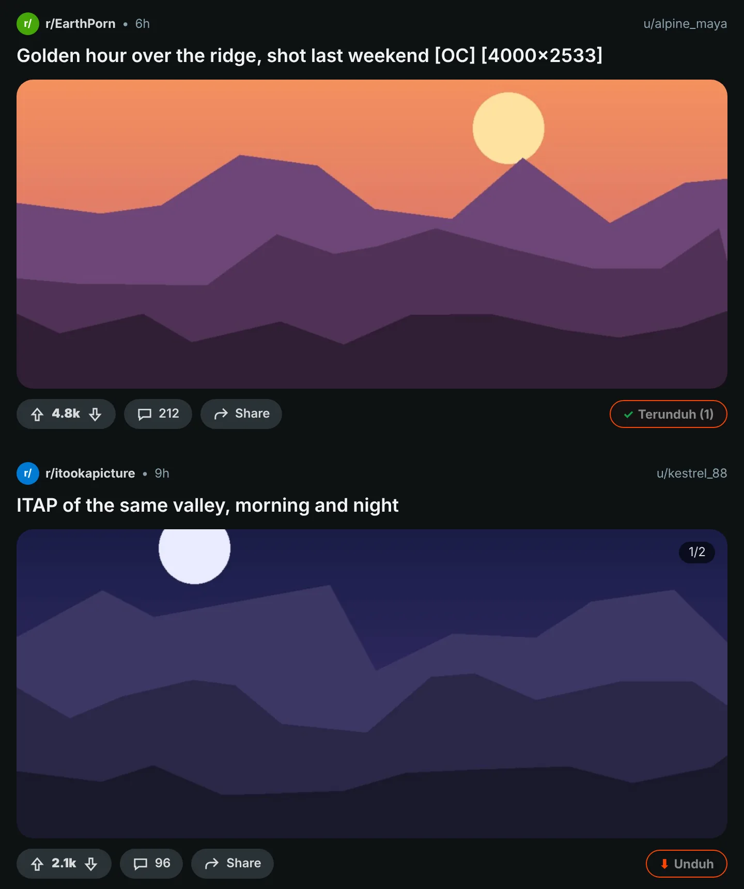
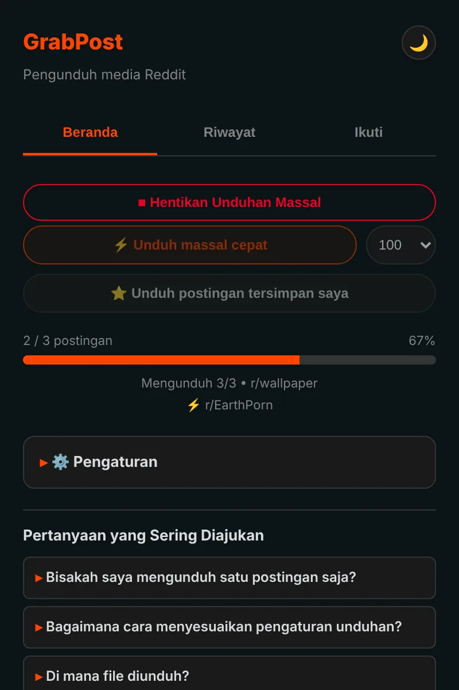
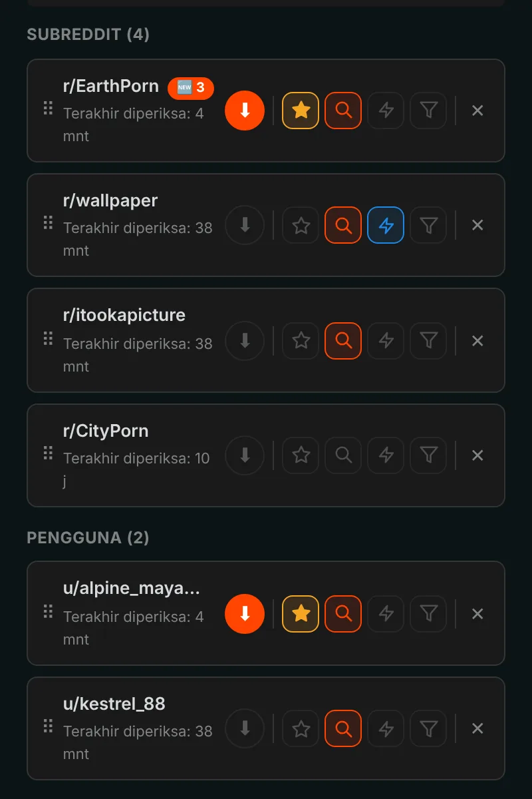
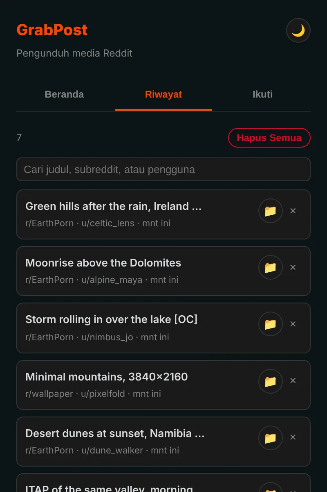

Simpan apa saja dari Reddit dengan sekali klik.
GrabPost menambahkan tombol Unduh di setiap postingan Reddit. Video tetap bersuara, galeri datang lengkap, dan seluruh subreddit atau profil terunduh selagi Anda mengerjakan hal lain. Gratis dan tanpa pelacakan.
Belum ada di toko. Memasang dari GitHub butuh sekitar satu menit.

Tekan tombol di postingan.
Tombol di setiap postingan
Tombol oranye ada di baris vote dan bagikan setiap postingan: di feed, profil, dan hasil pencarian, di Reddit baru maupun lama. Gambar, galeri, GIF, Redgifs, dan tautan Imgur semuanya bisa. Alt+Shift+D mengunduh postingan yang ada di tengah layar.

Seluruh halaman sekaligus
Mode cepat membaca subreddit, profil, multireddit, atau pencarian langsung dari data Reddit, jadi Anda tidak perlu menggulir. Yang sudah Anda punya dilewati, dan proses berhenti saat sampai di postingan yang pernah diunduh. Postingan tersimpan Anda juga diunduh dengan cara yang sama.

Ikuti, dan postingan baru datang sendiri
Ikuti subreddit dan pengguna, lalu dapatkan notifikasi saat ada media baru, atau biarkan terunduh sendiri. Saring berdasarkan jenis media, NSFW, atau kata kunci. Hingga 10 favorit bisa diperiksa sesering setiap 5 menit.

Setiap unduhan tercatat
Riwayat menampilkan apa yang Anda simpan, lengkap dengan kotak pencarian, dan postingan yang sudah Anda punya ditandai di Reddit. Cadangan dibuat otomatis, jadi memasang ulang tidak menghapus daftar Anda.

Detailnya sudah diurus
Video dengan suara
Reddit menyimpan suara di file terpisah. GrabPost menemukannya dan menggabungkannya, langsung di browser Anda.
Folder dan nama file Anda
Templat seperti {subreddit}/{user} untuk folder dan {date}_{title} untuk file.
Tanpa duplikat
Mengenali gambar yang sama meski seseorang mengunggahnya ulang ke subreddit lain.
Berjalan bersama IDM
Pengelola unduhan tidak bisa mengambil alih file dan membuang nama folder Anda.
Sabar dengan Reddit
Saat Reddit meminta jeda, GrabPost menunggu persis selama yang diminta lalu melanjutkan.
15 bahasa
Ekstensi dan halaman ini berbicara dalam bahasa Anda.
Apa yang Anda unduh adalah urusan Anda
- Tanpa analitik, tanpa pelacakan, tanpa akun
- Hanya berkomunikasi dengan Reddit dan situs yang menyimpan medianya
- Riwayat dan pengaturan tetap di browser Anda
- Sumber terbuka di GitHub
Pasang dalam semenit
GrabPost belum ada di Chrome Web Store, jadi dipasang secara manual. Berjalan di Chrome, Edge, Brave, Opera, dan browser Chromium lainnya.
- Unduh grabpost-v…zip terbaru dari GitHub dan ekstrak ke folder yang akan Anda simpan.
- Buka
chrome://extensionsdan aktifkan Mode pengembang di pojok kanan atas. - Klik Muat yang belum dikemas dan pilih folder grabpost hasil ekstrak.
- Buka Reddit. Tombol oranye muncul di postingan, dan ikon di toolbar membuka panel GrabPost.
Untuk memperbarui, ganti file di folder yang sama lalu tekan tombol muat ulang di kartu GrabPost. Pengaturan dan riwayat Anda tetap ada.
Firefox: versi untuk toko pengaya sedang disiapkan. Sementara itu, zip Firefox bisa dimuat sementara lewat about:debugging.
Pertanyaan
Apakah GrabPost gratis?
Ya, semua fitur gratis. Kalau GrabPost menghemat waktu Anda, Anda bisa mentraktir pengembangnya kopi.
Ke mana file disimpan?
Ke folder unduhan browser Anda, di dalam subfolder pilihan Anda. Bawaannya Reddit Downloads, dan nama file diawali nama subreddit.
Apakah harus masuk ke Reddit?
Hanya untuk postingan tersimpan Anda dan komunitas dengan batasan usia. Yang lain berjalan tanpa akun.
Apakah riwayat hilang kalau saya memasang ulang?
Tidak. Jika sinkronisasi browser aktif, pengaturan dan daftar ikuti kembali dengan sendirinya. File cadangan juga disimpan otomatis, dan GrabPost bisa membangun ulang riwayatnya dari daftar unduhan browser.
Apakah berjalan di Edge, Brave, atau Opera?
Ya. Browser Chromium apa pun yang bisa memuat ekstensi yang belum dikemas berjalan dengan zip Chrome.
Unduh GrabPost
Belum ada di toko. Memasang dari GitHub butuh sekitar satu menit.